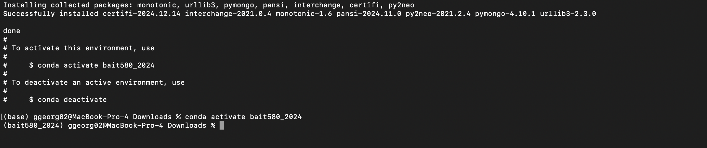

Conda#
In this course, you are supposed to do your assignments and projects in python. Therefore, I hope you already have your python 3 installed from your previous courses.
Conda is a python package manager, which we will be using for this course. This makes managing the python environment and packages easy. If you already have it in your system well and good, if not, please follow these instructions to install conda in your system.
Note
Make sure to install conda based on the version of python 3 that you installed.
Attention
Once you have finished installation, make sure you restart your terminal before trying out the following commands.
The following commands confirm that you have conda installed in your system, as it lists the version.
Attention
ggeorg02@MacBook-Pro ~ % is my terminal prompt. You want to paste what copy what comes after %. Eg, in below example conda --version
ggeorg02@MacBook-Pro ~ % conda --version
conda 4.10.3
Check the python version that you have.
(base) ggeorg02@MacBook-Pro ~ % python --version
Python 3.8.5
Setting up environment#
Now let us create an environment that we will be using for this course. We are providing you with a conda environment file which is available here. You can download this file and create a conda environment for the course and activate it as follows.
(base) ggeorg02@MacBook-Pro ~ % conda env create -f bait580_2024.yml
(base) ggeorg02@MacBook-Pro ~ % conda activate bait580_2024
This is how it looks after you run the above commands.

Note that this is not a complete list of the packages we’ll be using in the course and there might be a few packages you will be installing using conda install later in the course. But this is a good enough list to get you started.
The above command activates the MBAN environment and will show the following in the terminal.
(bait580_2024) ggeorg02@MacBook-Pro ~ %
Note
Notice the (base) changed to the (bait580_2024) once the bait580_2024 environment is activated.
Here are instructions on installing any additional packages using conda.
Importance of environment#
Python environment management is important for properly organizing your packages in a python environment because it ensures that all developers work in the same environment with the same packages and versions. The primary use of anaconda is to manage your python environment. You will definitely see this and use it when you start working on a large data science project. If you understand its value, you will also use it for your projects to organize your python environments with other courses/projects. This also helps with deployments, as the code can be tested in the same environment in which it will be deployed. It also allows for testing the effects of upgrading packages by creating a new environment with the updated packages.
In our case, the developer (in this situation, me) is sharing a specific environment called “bait580_2024.yml” with other developers (you all) to use. To create a new environment using the “bait580_2024.yml” file, you can use the command conda env create -f bait580_2024.yml. In addition, you can use the command conda install nb_conda_kernels to install in base environment so that you can easily select all available environments from your jupyter.
Please read more about it here